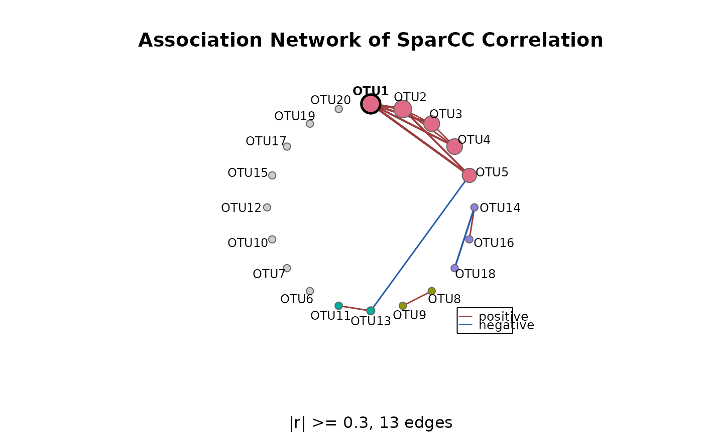
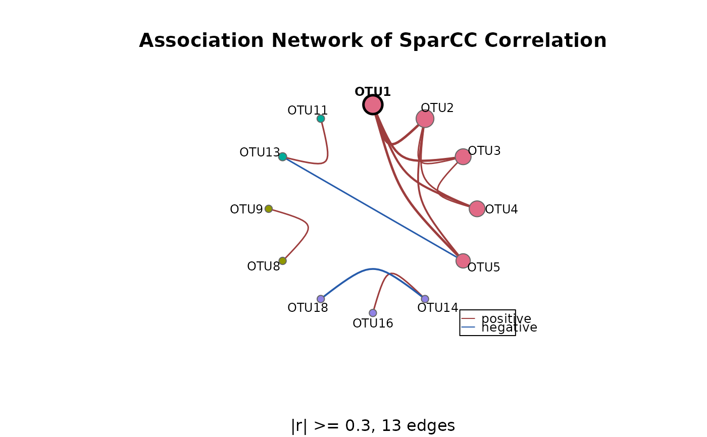

Draws a network from assoc_network(), the two networks compared by
assoc_network_compare() side by side, or the significant differential
associations from assoc_network_diff(), on a circular layout.
Usage
# S3 method for class 'ecodive_network'
plot(
x,
layout = NULL,
isolated = TRUE,
curved = FALSE,
labels = TRUE,
legend = "bottomright",
...
)
# S3 method for class 'ecodive_network_compare'
plot(
x,
layout = NULL,
isolated = TRUE,
curved = FALSE,
labels = TRUE,
legend = "bottomright",
...
)
# S3 method for class 'ecodive_network_diff'
plot(
x,
layout = NULL,
isolated = TRUE,
curved = FALSE,
labels = TRUE,
legend = "bottomright",
...
)Arguments
- x
A result of
assoc_network(),assoc_network_compare()orassoc_network_diff().- layout
Where to put the nodes:
NULL(the default) for the circular layout described below, or a matrix with two columns (x and y) and one row per feature, with the features' names as row names.- isolated
Whether to draw the features that have no edges. Default
TRUE.- curved
Whether to draw edges as curves bowed toward the centre, rather than straight lines. Default
FALSE.- labels
Whether to label the nodes with the features' names. Default
TRUE.- legend
Where to put the legend of edge colours: a keyword such as
"bottomright"(the default), orNULLfor none.- ...
Passed on to
graphics::plot(), such asmainorsub.
Details
Layout. The nodes go clockwise from 12 o'clock, grouped by cluster
(the largest clusters first) and, within a cluster, by decreasing
degree; features without edges come last. For assoc_network_compare()
both networks are drawn on x's layout; for assoc_network_diff() the
features are in x's input order.
Styling. Nodes are coloured by cluster (grey for cluster 0) and sized by the first of the centralities that defined the hubs
(hubs in assoc_network()); hubs have a black border and a bold
label. Edges are red for positive and blue for negative associations
(from near the ends of grDevices::hcl.colors()'s "Blue-Red 3"
palette), with
widths proportional to \(|r|\). For assoc_network_diff(), an edge is
red when the association is larger in x and blue when it is larger in
y, and its width is proportional to \(|z|\).
The title is the result's (see ecodive_display); the subtitle gives
the cutoff and the number of edges. The two panels of a comparison are
titled with the groups it was given (or "x" and "y"), under the
comparison's title.
Examples
set.seed(1)
basis <- matrix(rnorm(60 * 20), 60, 20)
basis[, 2:5] <- basis[, 2:5] + basis[, 1]
counts <- matrix(rpois(1200, exp(basis + 4)), 60, 20,
dimnames = list(NULL, paste0('OTU', 1:20)))
net <- assoc_network(sparcc(counts, n_draws = 10))
plot(net)

plot(net, curved = TRUE, isolated = FALSE)
